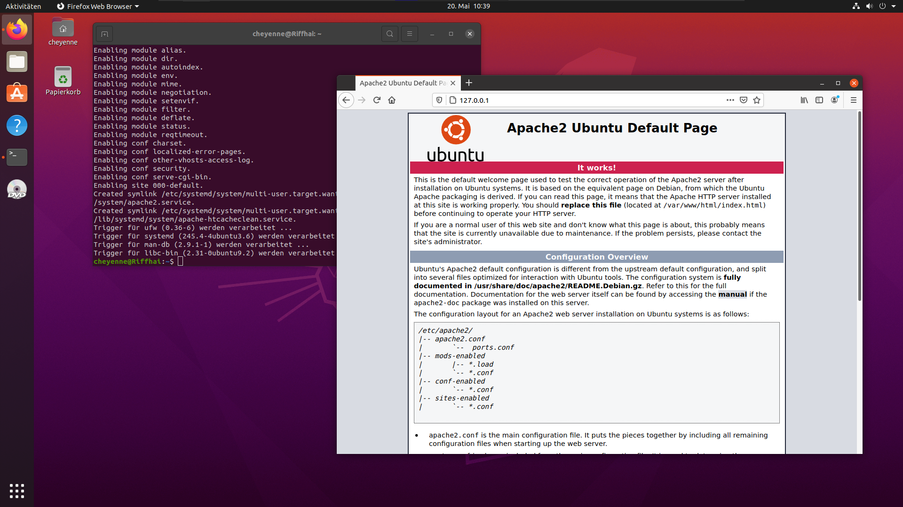
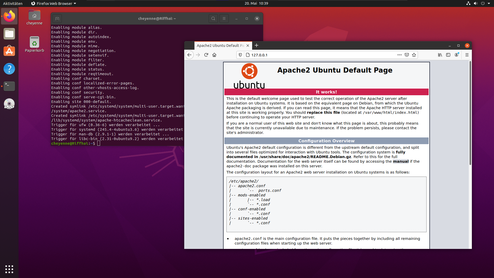

| Befehl |
Funktion |
| sudo apt Upgrade |
Upgradet das System |
| sudo apt Update |
Updatet das System |
| sudo apt dist update |
Updatet das System
|
| sudo apt clean |
Leeren des Paketcaches |
| sudo apt install [Programm] |
Gewünschtes Programm installieren |
| sudo adduser [Benutzername] |
Benutzer hinzufügen |
| sudo userdel [Benutzer] |
Benutzer löschen |
| sudo passwd [Benutzer] |
Passwort ändern |
| sudo usermod [Benutzer] |
Benutzereinstellungen ändern |
| sudo addgroup [Gruppenname] |
Gruppe hinzufügen |
| sudo groupdel [Gruppe]/td>
| VGruppe löschen |
| sudo groupmod [Gruppe] |
Gruppeneinstellungen ändern |
| sudo usermod – G [Gruppe] [Benutzer] |
Benutzer einer zusätzlichen Gruppe hinzufügen. |
| sudo usermod -g [gruppe] [Benutzer] |
Benutzer einer primären Gruppe hinzufügen. |
| sudo chown [Besitzer:Gruppe] [Datei] |
Besitzer eines Objektes ändern |
| sudo chgrp [Gruppe] [Datei] |
Gruppe eines Objekts ändern |
| ls -l |
Zugriffsrechte auflisten |
| sudo chmod [Rechte] [Datei] |
Zugriffsrechte ändern |
| su-c |
Als root agieren |
| exit |
Als vorheriger Benutzer agieren |
| ps -e |
Alle Prozesse anzeigen |
| ps -e - |
Alle Daten zu den Prozessen anzeigen |
| ps -e u |
Alle benutzerbezogenen Daten zu den Prozessen anzeigen |
| top |
Fortlaufende Anzeige des Ressourcen verbrauch |
| killal [Prozess] |
Prozess beenden |
| vmstat |
ZProzesse, Speicher und Swap-Partition anzeigen |
| free |
Arbeits- und Swapspeicher |
| df |
Harddiskbelegung |
| ddu -s [Verzeichnis] |
Gesamter Speicherplatzverbrauch des Verzeichnisses inkl. Unterverzeichnisse |
| du [Verzeichnis] |
Speicherplatzverbrauch der Verzeichnisse und aller Unterverzeichnissen einzeln |
| du -max-depth 1 [Verzeichnis] |
Speicherplatzverbrauch des Verzeichnisses und aller direkten Unterverzeichnissen einzeln |
| W |
Angemeldete Benutzer |
| last |
Letzte Benutzeranmeldung |
| unname -a |
Kernelversion, Systeminformationen |
| procinfo |
Speicher, Swap-Partition, CPU-Auslastung und Interrupts |
| ls [Verzeichnis] |
Verzeichnisinhalt anzeigen |
| ls -a [Verzeichnis], ls -al [Verzeichnis] |
Verzeichnisinhalt mit versteckten Dateien |
| cd [Pfad] |
Verzeichnis wechseln |
| cd ../ |
Ins Wurzelverzeichnis wechseln |
| cd.. |
Ins übergeordnete Verzeichnis wechseln |
| rmdir [Verzeichnis] |
Verzeichnis löschen |
| lrm -R [Verzeichnis] |
Verzeichnis mit Unterverzeichnissen und Daten löschen |
| mv [Quellverzeichnis] [Zielverzeichnis] |
Verzeichnis verschieben mit Unterverzeichnissen und Dateien |
| tree [Verzeichnis] -d |
Verzeichnisbaum anzeigen |
| tree |
Verzeichnisbaum inkl. Dateien anzeigen |
| pwd |
Arbeitsverzeichnis ausgeben |
| ifconfig |
IP – Adressen ausgeben |


 
